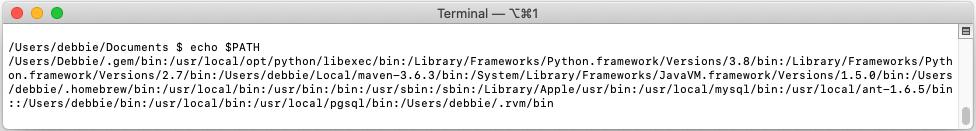
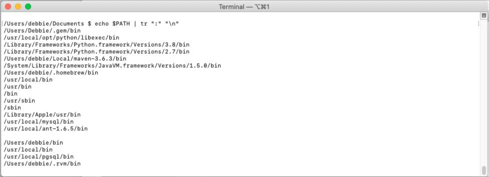

There's a ton to be learned about Linux, but here are some useful commands for the general user. They're extremely important for Linux and Mac users, but are also handy if you're connecting to a Linux server from Windows (using a shell you can install like PuTTY or Bash).
| Commands that Just Display Information | |
|---|---|
ls |
Lists the files and directories in your current directory, excluding hidden files. |
ls -a |
Lists all the files and subdirectories in your current directory...even the hidden ones. (Hidden files and directories start with "." by the way.) |
ls -al |
Lists the details of those files/directories. |
ls -R |
Lists ALL the contents...the files, the subdirectories, and all THEIR contents recursively (which means that it keeps doing this through all the levels of subdirectories, until it has shown you everything). This can take awhile if you're in a high-level directory. |
pwd |
Shows what directory you're currently in...aka the current directory. (If you're curious, "pwd" means "print working directory"). |
cat <filename>
Example: cat bestdognames.txt
|
Shows the contents of the file.
Note: If the filename doesn't already exist, you can create it by including a ">" (such as "cat > new.txt"). However, creating a file this way might leave you in editing mode that you could be unfamiliar with, depending on your default editors. |
| Commands that Help You Navigate | |
cd |
Goes to your home directory (changes the directory to your home directory). So if you're in ~/projects/MyProject,
this would take you to ~/. Incidentally, "~" represents your user's home directory. For more
info on that, see below. |
cd .. |
Goes back one level (changes the directory). So if you're in ~/projects/MyProject, this
command would take you back one level to ~/projects. |
cd / |
Takes you to the root directory. |
cd <directory> |
Changes the directory. It takes you to the directory you specify. If it doesn't happen to be one of the subdirectories of where you currently are, you can either navigate to it first or include the path (see next). |
cd <path>
Examples: cd ~/Documents
cd ~/projects/AnotherProject
|
Takes you to the directory using the path you specify. In the examples, the "~" refers to your home* directory. |
| Commands that Create, Edit, and Delete | |
mkdir <"directory"> |
Creates a subdirectory in your current working directory. |
rmdir <directory>
rm -d <directory>
Example: rm -d importanttaxdocs
|
Removes (deletes) the specified directory if it's empty. I'm not telling you how to delete directories that aren't empty...you'll have to Google it. :) |
touch <filename> |
Creates a file using the filename you specify. If the file already exists, it'll update the timestamp instead. |
echo <"content"> > <filename>
Example: echo "Chocolate" > grocery_list.txt
|
Creates a file with the filename AND contents you specify. |
rm <filename>
Example: rm sworn_enemies.txt
|
Go ahead....delete it. ;) |
| Running Executables at the Command Line | |
python --version
java --version
node --version
node -v
|
While maybe not really Linux commands, I'm including these here anyway. They let you quickly check the
version of your application. Often times you can guess it (such as "ruby -v"). If not, a
quick search will do the trick. If you get an error when trying to run an executable like this from the
command line, you might not have the $PATH set up (see my whining below). |
which python
which java
which node
|
This shows the location(s) for that application. |
While searching for information about your Linux/MacOS directories, you've probably seen the squiggly "tilde"
symbol like this: ~/Documents. If you're wondering what the "~" means, it's just
referring to your home directory (usually some variation of your name). So Scooby Doo's home directory would
probably be "scooby", "scoobydoo", or "scooby.doo". (It's the account name, aka shortname, from when the
computer was first set up.) If his home directory is "scooby" then his Documents directory path could be
referred to in different ways:
/scooby/Documents
~/Documents
/startup/Users/scooby/Documents
The root directory (not to be confused with the root user) is the only directory that's not a subdirectory. A subdirectory is just a directory that's within another directory (which is called the parent of that subdirectory). So the root directory is the parent of parents. In some MacOS installations, the root directory isn't visible by default in Finder (although there are ways to change that). But basically if you click "startup" or the computer icon (such as MacBookPro), you'll see the visible contents of the root directory: Applications, Library, System, and Users.
Keep in mind that 1) You shouldn't make changes in your Systems folder, and 2) there are several folders called the same thing (especially Library, User, bin, etc.) in different locations. Which brings me to the main reason I wanted to write this page...
When trying to quickly catch up with the latest technologies, one thing that that can slow you down is troubleshooting installations and dependencies. Package managers like Homebrew and NPM can help quite a bit.
A lot of times after installing new applications, you'll need to set the $PATH variable so that you can run the commands from anywhere. The confusing part is that there are several places you can do this, and they all sound ridiculously similar. Luckily, you don't have to do it in each place.
One thing to know is that they don't have to match...in fact sometimes they shouldn't match. For example, if
your new installation of Python 3.8 shows in usr/local/bin, but usr/bin still shows Python 2.7, that's OK. The MacOs needs version 2.7 to run, so it
should stay as is.
Here are most of the locations of those directories (you don't really need to know all of these...I just like
having the list handy):
/bin
/sbin
/usr/bin
/usr/local/bin
/usr/local/opt
/usr/sbin
If you've installed many programs, especially with a package manager, you probably have more locations than the ones listed above. And if you're troubleshooting a problem (such as not being able to run some programs from the command line), you might need to find more pathfile locations so you can doublecheck the path information stored there.
This command shows your pathfile directories:
echo $PATH
Here are my particular directories, but it varies from person to person.

And here's a command that makes the results a lot easier to read!
echo $PATH | tr ":" "\n"

This person does a good job explaining $PATH environment variables, so I'll leave it to him (courtesy of Happy
Belly Bioinformatics):
What the heck is my PATH, and how do I get it to do what I want?
If you do an "ls -l" command or "ls -al" command to see the details when listing directories and files, you'll probably noticed a lot of code-like information on the left, like this:
-rwxrw-r--
You don't normally need to worry about that information. It just indicates the permissions for those directories and files. But in case you're curious, here are some quick definitions:
- 1st slot (such as "-"): Indicates whether it's a directory (d), file (-), or executable
- 2nd, 3rd, and 4th slots (such as "rwx"): Define the owner's permissions
- 5th, 6th, and 7th slots (such as "rw-"): Defines the group permissions
- 8th, 9th, and 10th slots (such as "r--"): Define the permissions of others
Here is what the -, r, w, and x stand for:
"r" - Read (accessing)
"w" - Write (editing)
"x" - Executable (running programs, including from the command line)
"-" - Denied
If you get a permissions error when trying to run a command, you probably just need to precede the command with
sudo (short for "superuser do"). The superuser is also known as the root user (unrelated to the
root directory) and lets you authenticate so you can have the necessary permissions to do the command.
There's obviously a lot more you can learn and do with Linux, but this is enough to get you started. One more thing...if your CLI (like Bash or Terminal) doesn't look the way you want, it can be customized in .bash_profile (with a bit of work). For example, some people like to have a different prompt, rather than "$". I didn't like my prompt being on a separate line, and I wanted to always see my current directory. So if yours is driving you crazy, you can search online for help on editing your .bash_profile and be prepared for another adventure.